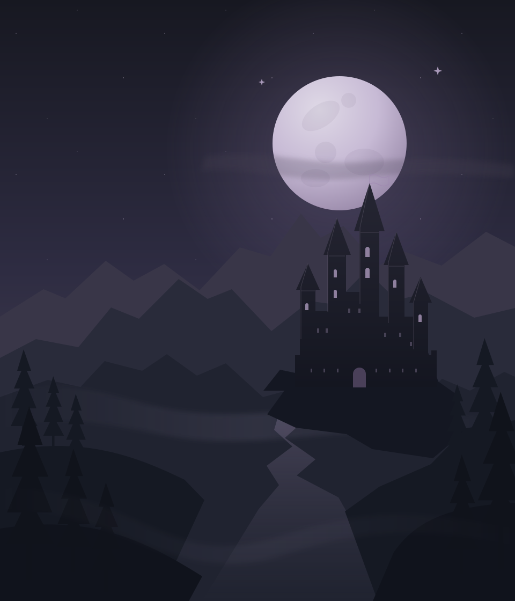

A change of perspective
Explore in third person and move into first person for a closer view. Both perspective systems are part of the existing technical foundation.
Exploration & perspective
An independent world in the making
The age of friendship is over.
Enter a familiar land changed by forbidden magic, rival powers, and the choices you make. An adult open-world MLP experience, built in Unreal Engine.
A familiar world. A darker chapter.Atmospheric illustration · Not gameplay
01 / The world after friendship
A new arrival. An old world.The magic that once held Equestria together has changed. Old allegiances have fractured. Behind the beauty of its cities and forests, a new struggle for influence is taking shape.
You arrive as an outsider. Who you trust, what you pursue, and how far you follow the darker paths will define your place in this world.
Every alliance has a price.
Every choice leaves a mark.
From enchanted wilderness to the seats of old power, the vision is a connected world that rewards curiosity. Explore freely, find your own routes, and uncover what became of the Equestria you remember.
Seven major characters in human form sit at the heart of the project. Their planned faction roles, relationship paths, and personal ambitions will give you reasons to choose your allies carefully.
Navigate mature relationships, build your reputation, and explore the cost of forbidden power. The intended experience is a player-driven sandbox shaped by social choices, faction loyalties, and exploration.
02 / The experience
Systems first. Possibilities next.A full 3D game is the ambition. The foundation draws on systems already developed across Breedspawn and Uncharted Desires.
Explore in third person and move into first person for a closer view. Both perspective systems are part of the existing technical foundation.
Exploration & perspectiveUtility AI provides the foundation for a responsive population. NPC routines, spontaneous encounters, and lasting connections are part of the world vision.
Population & utility AIInventory and combat systems bring structure to exploration and conflict. Discover equipment, prepare for encounters, and choose how you face the world.
Inventory & combatDialogue and social systems support the planned faction and relationship paths. Trust, ambition, and mature themes are central to the experience.
Dialogue & allegiancesA project vision supported by existing systems. Final features and scope may evolve during development.
03 / Development journal
Early developmentThe project starts with seven completed human-form character models and a set of working systems from previous titles. Bringing them together into this world is the next chapter.
A public build has not been announced. Progress and scope will be shared as development advances.
Seven human-form character models are ready. Open-world, first- and third-person, inventory, combat, dialogue, and utility AI systems are functional in previous projects.
Seeking collaborators, artists, and supporters to help turn the concept and existing foundation into a cohesive open-world experience.
A random pony NPC pipeline, additional character variants, and expanded world interactions are planned. Their implementation and timing remain to be defined.
04 / Help shape the next chapter
Looking for artists, developers, and creative collaborators who want to help build a playable world. Bring your craft, your perspective, and a serious interest in the project.
Prepare a short introduction to share with the creator.
A few things to know
Equestria After Dark is the working title of an independent, adult open-world MLP fan project. It explores a darker fantasy setting with mature themes and reimagined characters in human form. The site keeps its content non-graphic.
No public demo or release date has been announced. Existing systems and character assets provide a starting point; they do not represent a finished or currently available game.
Use the collaboration button above to prepare and download an introduction. You can share that file with the creator through the channel where you found this project. Official community, contact, and support links have not been announced here yet.
No. This is an independent fan project and is not affiliated with or endorsed by Hasbro. My Little Pony and related names belong to their respective rights holders.